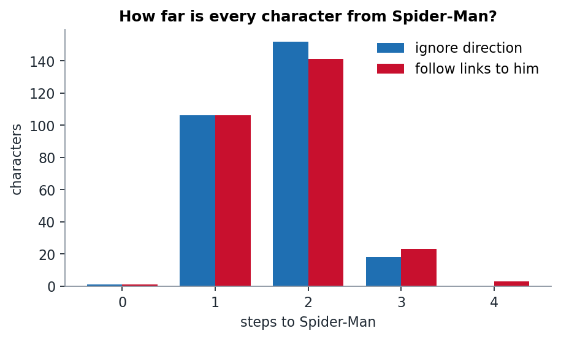
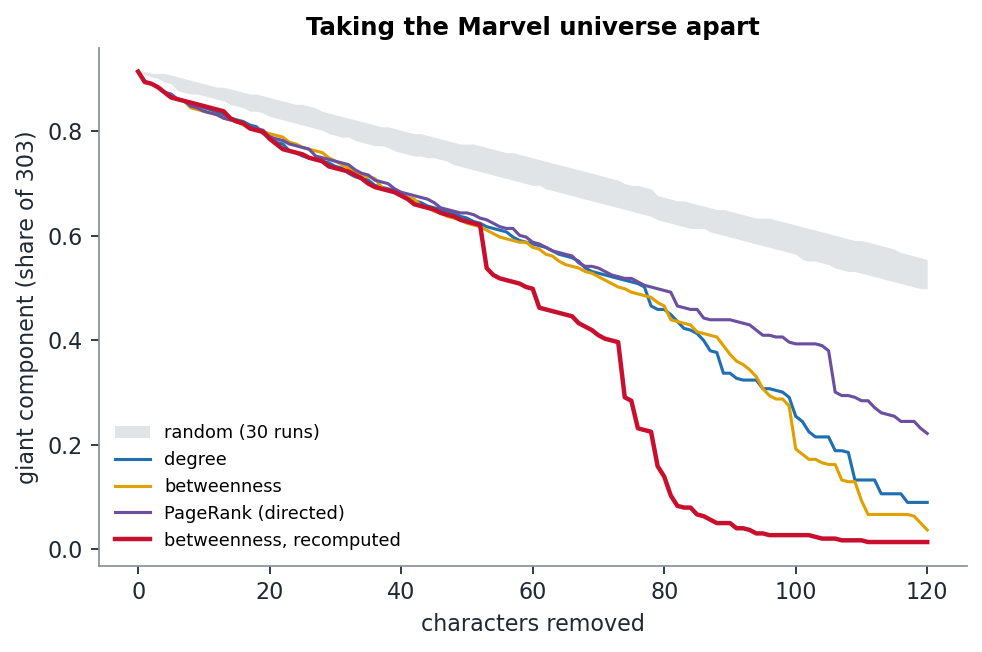

Week 3 · Who matters, and why
Taking the Marvel universe apart
Everyone is at most four clicks from Spider-Man. But to break the network you have to remove far more than Spider-Man, and the order you remove characters in matters more than which centrality you pick.
Two questions
- Six degrees of Spider-Man. How far is every character from the most-linked page, and who is the farthest?
- Which removals break the network? If we delete characters one at a time, ranked by some centrality, how fast does the giant component fall apart? And does it matter which centrality we use?
Six degrees of Spider-Man (it's really four)

Ignoring direction, every character in the giant component is at most 3 steps from Spider-Man, and the average is 1.68. If you follow links only in their direction (can you click your way to Spider-Man?), the average rises a little to 1.72 and the maximum becomes 4.
- The longest directed chain is Mahr Vehl → Genis-Vell → Captain Marvel → Machine Man → Spider-Man. It is a walk through the cosmic Kree corner of Marvel, a long way from Queens.
- The farthest by undirected distance is the western gunslinger Kid Colt → Black Rider → Doctor Strange → Spider-Man.
- Three characters in the giant component can never click their way to Spider-Man: Peggy Carter, Synapse and The Witness. Other pages link to them, but every path out of them dead-ends.
Taking it apart
We removed up to 120 characters in four different orders and tracked the share of all 303 that stays in the largest component:
- by degree,
- by betweenness (computed once on the full network),
- by PageRank on the directed network,
- by betweenness, recomputed after every removal (the "adaptive" attack),
against 30 random removal orders (grey band).

| order | removals until giant component < 50% |
|---|---|
| random (median of 30) | not reached within 120 |
| PageRank | 79 |
| degree | 78 |
| betweenness (static) | 74 |
| betweenness (recomputed) | 60 |
What surprised us
The network is tough. Removing Spider-Man, Hulk, Wolverine and Doctor Strange together barely dents it. After 20 targeted removals the giant component still holds about 79% of all characters (85% under random removal). This is not a hub-and-spoke network where cutting the centre leaves loose ends. Marvel is held together by many overlapping team rosters.
The three static centralities are almost indistinguishable. Degree, betweenness and PageRank largely agree on who is important (Spider-Man, Hulk, Wolverine and Doctor Strange top all three lists). They only diverge after about 80 removals, by which point the network has already fallen apart.
Recomputing beats choosing a smarter measure. The adaptive attack does not win by picking a better first target; its first five removals are the same top hubs. It wins after about 50 removals, when it finds characters that have become bridges because their neighbours are gone. The cliff in the red curve is removal #53: Leech, a minor Morlock mutant with in-degree 2. Once the hubs around him are gone, he is the only thing holding 25 characters to the rest. Removal #74 (Sabra) does the same to a cosmic cluster that includes Star-Lord, Hyperion, Gladiator and the Eternals. Nobody would rank Leech or Sabra as "important" on the full network. Their importance only appears once the hubs are removed.
The first ten characters the adaptive attack removes are Spider-Man, Hulk, Wolverine, Doctor Strange, Deadpool, She-Hulk, Hercules, Phoenix Force, Cloak and Dagger, and Black Panther.
What we checked
- That the 30 random orders were not all identical (the grey band has visible width).
- PageRank uses the directed network, so its top list includes Black Cat, Mayday Parker and Venom: characters that Spider-Man links to. This makes sense, because PageRank passes on importance along out-links, and Spider-Man spends his on his own family (see week 1).
Limitation
"Breaking the network" is a thought experiment here. Deleting a character from Wikipedia would not delete the links between the remaining characters that went through them in the stories. Removal measures how much the link structure depends on a node, not how much the Marvel universe does.